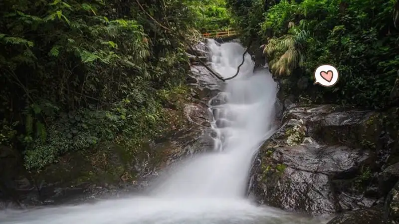
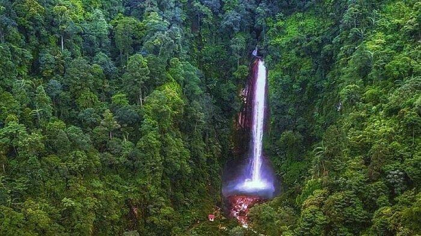
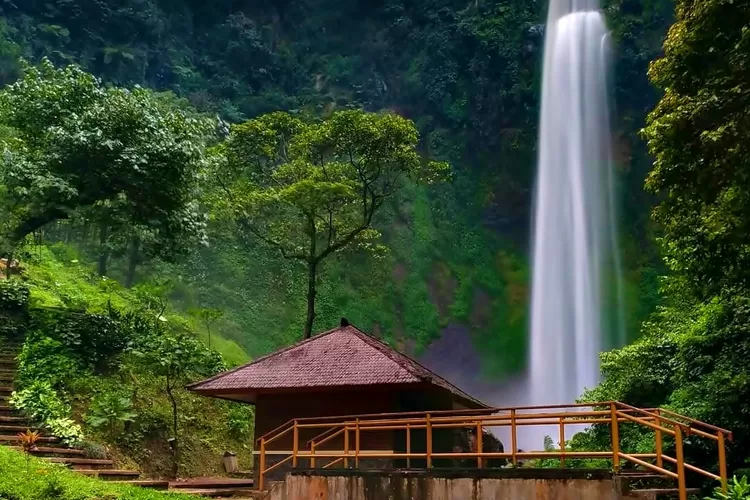
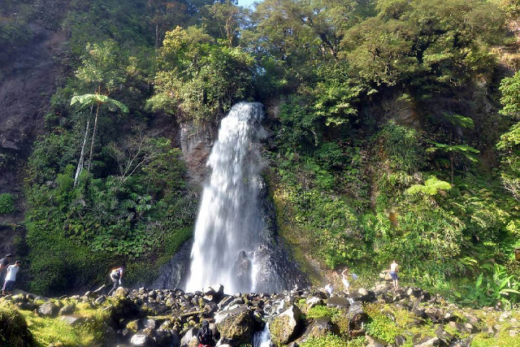
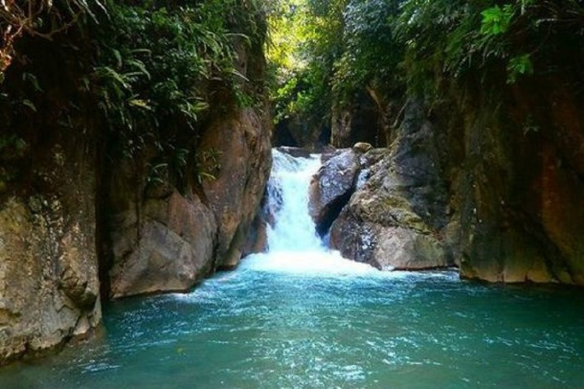

Curug Cigamea, yang terletak di daerah Bogor, Jawa Barat, telah menjadi salah satu destinasi wisata yang populer. Keindahan air terjun yang menjulang tinggi di tengah tebing hijau yang asri menjadi daya tarik utama tempat ini. Menikmati perjalanan dengan rute menanjak yang sedikit menantang ternyata memberikan pengalaman yang unik.. Informasi lebih lanjut tentang destinasi ini...

Curug Panjang Bogor
Curug Panjang menjadi salah satu destinasi wisata di Bogor yang hampir tidak pernah sepi pengunjung. Destinasi ramah di kantong ini menjadi salah satu kawasan wisata primadona yang sayang untuk dilewatkan saat liburan tiba. Bukan hanya menyajikan pemandangan yang eksotis, lokasi Curug Panjang juga menawarkan alam yang asri dan segar sebab lokasinya masih menjadi bagian dari lereng Gunung Paseban. Informasi lebih lanjut tentang destinasi ini...

Curug Seribu Bogor
Salah satu tempat wisata di Bogor yang wajib kamu kunjungi adalah Curug Seribu. Kamu bisa ajak teman atau keluarga ke Curug Seribu untuk menikmati pergantian tahun bersama di tempat wisata Bogor. Curug Seribu berada di Gunung Bunder, Kecamatan Pamijahan, Kabupaten Bogor. Dinamakan Curug Seribu karena dinding batu air terjun dikelilingi sangat banyak air terjun kecil. Curug Seribu ini berada di ketinggian antara 750-1.050 mdpl.
Informasi lebih lanjut tentang destinasi ini...

Curug Cimahi Bogor
Curug Cimahi adalah satu destinasi wisata yang ada di sekitar Bandung tepatnya di Cimahi. Selama ini orang banyak mengenal tempat wisata berpusat di Kota Bandung dan Lembang, ternyata di Cimahi juga ada objek wisata yang mempesona. Curug Cimahi salah satunya, air terjun yang memiliki ketinggian sekitar 87 meter ini menawarkan ketinggian yang eksotik, menjadikan kesan tersendiri bagi pengunjung.
Informasi lebih lanjut tentang destinasi ini .

Curug Cibereum Bogor
Curug Cibereum atau Air Terjun Cibereum terletak di kawansan Taman Nasional Gunung Gede Pangrango (TNGGP). Curug ini terdiri dari air terjun utama Curug Cibeureum, dan dua air terjun lain yang lebih kecil, Curug Cidendeng dan Curug Cikundul. Curug Cibeureum adalah air terjun terbesar dan paling pendek di kawasan ini, letaknya yang lebih terbuka dan dekat shelter sehingga lebih banyak dikerumuni. Informasi lebih lanjut tentang destinasi ini...

Curug Leuwi Hejo Bogor
Sedang mencari tempat wisata di area Bogor? Moms bisa menikmati pemandangan alam Curug Leuwi Hejo. Ini merupakan objek wisata air terjun yang cukup tinggi dan berada di tengah perhutanan. Arti dari Leuwi sendiri dalam bahas Sunda adalah kolam atau relungan. Sedangkan, hejo berarti hijau. Artinya, air terjun ini akrab dikenal dengan perairan yang cukup jernih layaknya 'Green Canyon', Moms. Informasi lebih lanjut tentang destinasi ini...